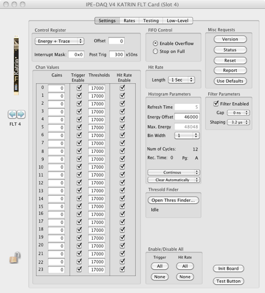
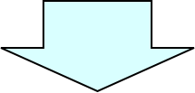
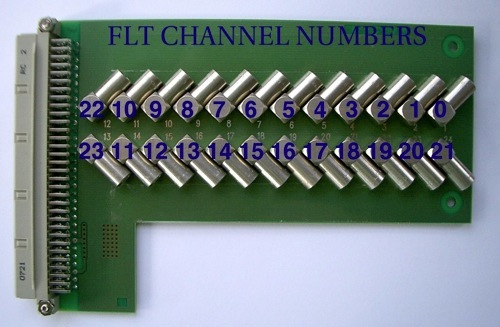
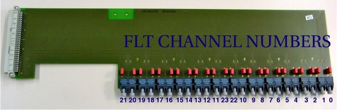

24 Channel Adapter Boards


.

FLT Channels
0 - 23


Mapping: Lemo plug to FLT channel
Mapping: OPTO receiver channel to FLT channel
NOTE: take care of the FLT channel numbering schema!
To be compatible with the AUGER V3 Electronics the numbering of the channel pins on the V4 crate backside plugs is not straightforward. The V4 crate has 24 channels (V3: 22 channels). The two new channels #22,#23 were placed between channels #10 and #11.